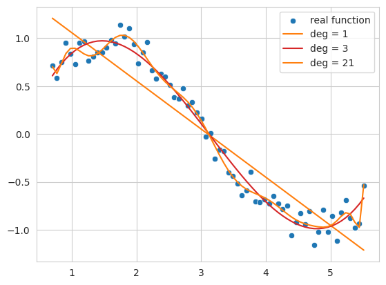
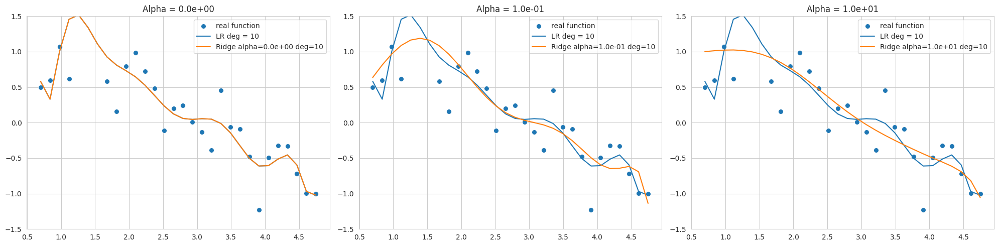
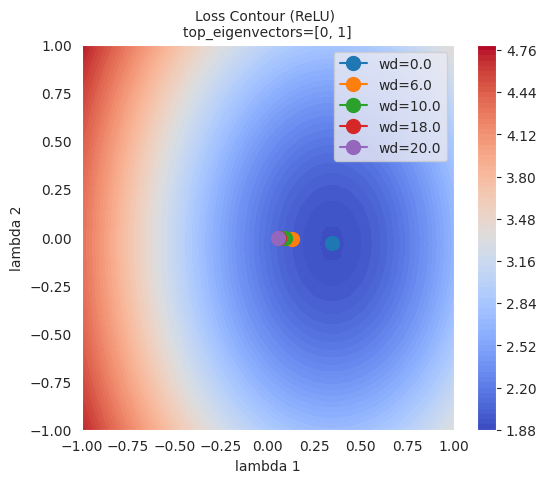
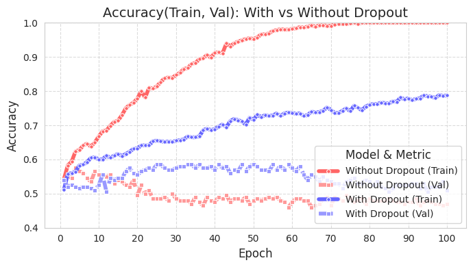
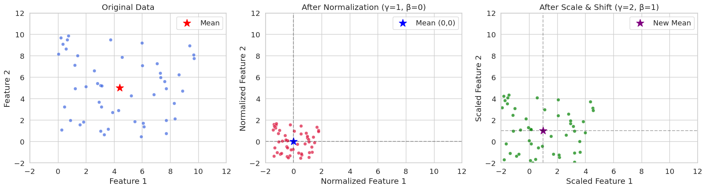
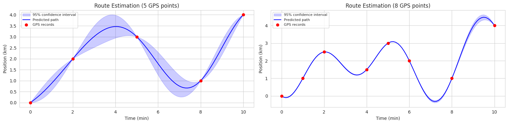
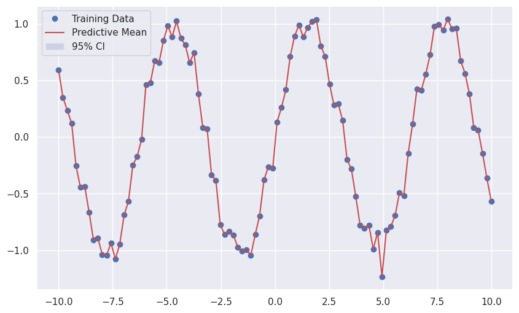

Code
!pip install dldna[colab] # in Colab
# !pip install dldna[all] # in your local
%load_ext autoreload
%autoreload 2 
“简单是极致的精妙。” - 列奥纳多·达芬奇 (Leonardo da Vinci)
深度学习模型具有通过大量参数表达复杂函数的强大能力。然而，这种能力有时也是一把双刃剑。当模型过度适应训练数据时，反而会导致对新数据的预测性能下降的过拟合(overfitting)现象。
1986年反向传播算法被重新关注后，过拟合一直是深度学习研究者面临的持续挑战。最初，通过减少模型规模或增加训练数据来应对过拟合。但这些方法限制了模型的表达能力，或者由于数据收集的困难而存在局限性。2012年AlexNet的出现开启了深度学习的新时代，同时也突显了过拟合问题的严重性。由于AlexNet比之前的模型具有更多的参数，因此过拟合的风险更大。随着深度学习模型规模呈指数级增长，过拟合问题成为了深度学习研究的核心课题。
在本章中，我们将理解过拟合的本质，并探讨为解决这一问题而发展起来的各种技术。就像探险家探索未知领域并绘制地图一样，深度学习研究者们为了克服过拟合这一难题，不断探索和改进新的方法。
过拟合最早在1670年William Hopkins的著作中被提及，但在现代意义上则始于1935年的《生物学季刊》中的一段话：“用13个观测值进行六变量分析看起来像是过拟合”。随后，在20世纪50年代开始在统计学中得到正式研究，特别是在1952年“时间序列的拟合检验”论文中，在时序分析的背景下得到了重要讨论。
深度学习中的过拟合问题随着2012年AlexNet的出现而进入了一个新的阶段。AlexNet是一个拥有约6000万个参数的大规模神经网络，其规模远超之前的模型。随后，随着深度学习模型规模呈指数级增长，过拟合问题变得愈发严重。例如，现代大规模语言模型（LLM）包含数千亿个参数，因此防止过拟合成为了模型设计的核心任务。
为了应对这些挑战，提出了诸如dropout（2014年）、批归一化（2015年）等创新解决方案，并且近年来出现了利用训练历史进行过拟合检测和预防（2024年）等更加精细的方法。特别是在大规模模型中，从传统的提前停止（early stopping）到现代技术如集成学习、数据增强等，各种策略被综合运用。
通过一个简单的例子来直观地理解过拟合现象。我们将对包含噪声的正弦函数数据应用不同阶数(degree)的多项式(polynomial)。
!pip install dldna[colab] # in Colab
# !pip install dldna[all] # in your local
%load_ext autoreload
%autoreload 2import numpy as np
import seaborn as sns
# Noisy sin graph
def real_func(x):
y = np.sin(x) + np.random.uniform(-0.2, 0.2, len(x))
return y
# Create x data from 40 to 320 degrees. Use a step value to avoid making it too dense.
x = np.array([np.pi/180 * i for i in range(40, 320, 4)])
y = real_func(x)
import seaborn as sns
sns.scatterplot(x=x, y=y, label='real function')
# Plot with 1st, 3rd, and 21th degree polynomials.
for deg in [1, 3, 21]:
# Get the coefficients for the corresponding degree using polyfit, and create the estimated function using poly1d.
params = np.polyfit(x, y, deg) # Get the parameter values
# print(f" {deg} params = {params}")
p = np.poly1d(params) # Get the line function
sns.lineplot(x=x, y=p(x), color=f"C{deg}", label=f"deg = {deg}")The autoreload extension is already loaded. To reload it, use:
%reload_ext autoreload/tmp/ipykernel_1362795/2136320363.py:25: RankWarning: Polyfit may be poorly conditioned
params = np.polyfit(x, y, deg) # Get the parameter values
此代码示例生成包含噪声的正弦函数数据，并使用一阶、三阶和二十一阶多项式对这些数据进行拟合。
一次函数 (deg = 1): 数据的整体趋势未能得到很好的遵循，仅表现为简单的直线形式。这表明模型处于 欠拟合(underfitting) 状态，无法充分表达数据的复杂性。
三次函数 (deg = 3): 相对较好地捕捉了数据的基本模式，同时表现出不被噪声大幅影响的平滑曲线形态。
二十一阶函数 (deg = 21): 过度追踪训练数据中的噪声，导致模型 过拟合(overfitting) 状态，即仅在训练数据上过度优化。
当模型复杂度过低（此处指多项式的阶数）时会发生欠拟合，而复杂度过高则会导致过拟合。我们最终要寻找的是不仅在训练数据上表现良好，而且能够很好地泛化到新数据的模型，即最接近实际正弦函数的近似函数。
当模型的复杂度（容量，capacity）相对于训练数据量过大时会发生过拟合。神经网络具有大量参数和极高的表达能力，因此特别容易发生过拟合。当训练数据不足或数据中噪声较多时，也可能会出现过拟合。过拟合表现为以下特征。
最终，过拟合模型在训练数据上的表现会很高，但在实际新数据上的预测性能却会下降。为了防止这种过拟合，在后续讨论中我们将详细介绍L1/L2正则化、dropout、批标准化等技术。
挑战： 如何在有效控制模型复杂度的同时提高泛化性能？
研究者的思考： 减少模型的大小以防止过拟合可能会限制其表达能力，而仅仅增加训练数据也不总是可行。需要一种方法来约束模型结构或学习过程，防止对训练数据过度优化，并提高对新数据的预测性能。
在神经网络中常用的正则化（regularization）技术有L1和L2正则化。L1指的是套索（Lasso），L2指的则是岭（Ridge）正则化（用于线性回归）。
也称为岭回归和套索回归，每种回归都通过引入一定的惩罚项来限制参数的变化。两种方法的特点差异可以总结如下表：
| 特征 | 岭回归(Ridge Regression) | 套索回归(Lasso Regression) |
|---|---|---|
| 惩罚类型 | 施加L2惩罚。惩罚项是对参数平方值的和乘以α值。 | 施加L1惩罚。惩罚项是对参数绝对值的和乘以α值。 |
| 参数影响 | 抑制值大的参数，使其接近0但不等于0 | 当α值较大时，可将某些参数值变为0，从而生成更简洁的模型 |
| 总体影响 | 所有参数都得以保留。因此即使影响较小的参数也会被保留下来。 | 只保留相关的参数，具有选择性特征。可以更简洁地解释复杂的模型。 |
| 最优化特性 | 相比套索，对理想值较为不敏感。 | 由于惩罚项是绝对值形式，因此对理想值非常敏感。 |
表达式如下：
岭目标函数 (Ridge Regression Objective Function)
“修改后的岭目标函数” = （未修改的线性回归函数） + \(\alpha \cdot \sum (\text{参数})^2\)
\(f_{\beta} = \sum_{i=1}^{M} (y_i - \hat{y}_i)^2 + \alpha \sum_{j} \beta_{j}^2\)
其中，\(\beta\)是待求的参数（权重）向量。 \(\alpha \sum_{j} \beta_{j}^2\)称为惩罚项或正则化项。 \(\alpha\)是调整正则化项大小的超参数。参数的求解公式如下：
\(\beta = \underset{\beta}{\operatorname{argmin}} \left( \sum_{i=1}^{M} (y_i - \hat{y}_i)^2 + \alpha \sum_{j} \beta_{j}^2 \right)\)
套索目标函数 (Lasso Regression Objective Function)
“修改后的套索目标函数” = （未修改的线性回归函数） + $ || $
\(f_{\beta} = \sum_{i=1}^{M} (y_i - \hat{y}_i)^2 + \alpha \sum_{j} |\beta_{j}|\) \(\beta = \underset{\beta}{\operatorname{argmin}} \left( \sum_{i=1}^{M} (y_i - \hat{y}_i)^2 + \alpha \sum_{j} |\beta_j| \right)\)
参数平方和作为惩罚项的L2在神经网络中通常被称为权重衰减（weight decay）。我们将使用岭（L2）回归来观察它与简单线性回归有何不同。为此，我们使用sklearn中实现的模型。为了实现这一点，需要将输入x数据按次数扩展维度。接下来，我们将使用以下简单的实用函数来创建。
def get_x_powered(x, p=1):
size = len(x)
# The shape of the created x will be (data size, degree)
new_x = np.zeros((size, p))
for s in range(len(x)): # Iterate over data size
for d in range(1, p+1): # Iterate over degrees
new_x[s][d-1] = x[s]**d # Raise x to the power of the degree.
return new_x
# Let's take a quick look at how it works.
deg = 3
x = np.array([np.pi/180 * i for i in range(20, 35, 5)])
y = real_func(x) # real_func는 이전 코드에 정의되어 있다고 가정
print(f"x = {x}")
new_x = get_x_powered(x, p=deg)
print(f"new_x = {new_x}")x = [0.34906585 0.43633231 0.52359878]
new_x = [[0.34906585 0.12184697 0.04253262]
[0.43633231 0.19038589 0.08307151]
[0.52359878 0.27415568 0.14354758]]因为是三次的，所以 \(x\) 值会增加到 \(x^2, x^3\)。例如 0.3490, 0.1218(0.3490 的平方), 0.04253(0.3490 的立方) 就是这样的例子。如果是十次的，则数据会生成到 \(x^{10}\)。惩罚项的 alpha 值可以取 0 到无穷大的值。alpha 值越大，正则化强度就越大。次数固定为 13，并且我们将在改变 alpha 值的同时比较线性回归函数和岭回归。
import numpy as np
from sklearn.linear_model import Ridge
import matplotlib.pyplot as plt
import seaborn as sns
from sklearn.preprocessing import PolynomialFeatures
from sklearn.pipeline import make_pipeline
# Create a noisy sine wave (increased noise)
def real_func(x):
return np.sin(x) + np.random.normal(0, 0.4, len(x)) # Increased noise
# Create x data (narrower range)
x = np.array([np.pi / 180 * i for i in range(40, 280, 8)]) # Narrower range, larger step
y = real_func(x)
# Degree of the polynomial
deg = 10
# List of alpha values to compare (adjusted)
alpha_list = [0.0, 0.1, 10] # Adjusted alpha values
cols = len(alpha_list)
fig, axes_list = plt.subplots(1, cols, figsize=(20, 5)) # Adjusted figure size
for i, alpha in enumerate(alpha_list):
axes = axes_list[i]
# Plot the original data
sns.scatterplot(ax=axes, x=x, y=y, label='real function', s=50) # Increased marker size
# Plot linear regression
params = np.polyfit(x, y, deg)
p = np.poly1d(params)
sns.lineplot(ax=axes, x=x, y=p(x), label=f"LR deg = {deg}")
# Ridge regression (using Pipeline, solver='auto')
model = make_pipeline(PolynomialFeatures(degree=deg), Ridge(alpha=alpha, solver='auto'))
model.fit(x.reshape(-1, 1), y) # Reshape x for pipeline
y_pred = model.predict(x.reshape(-1, 1)) # Reshape x for prediction
sns.lineplot(ax=axes, x=x, y=y_pred, label=f"Ridge alpha={alpha:0.1e} deg={deg}")
axes.set_title(f"Alpha = {alpha:0.1e}")
axes.set_ylim(-1.5, 1.5) # Limit y-axis range
axes.legend()
plt.tight_layout()
plt.show()
该图显示了使用10次多项式对添加了噪声的正弦函数数据进行拟合的结果，展示了使用不同alpha值（正则化强度）的Ridge回归结果。由于数据范围狭窄且噪声较多，在较低阶数下也容易发生过拟合。
alpha=0相比弯曲减少，但仍对噪声敏感，与正弦函数有较大偏差。通过选择合适的alpha值可以控制模型复杂度并提高泛化性能。L2正则化有助于将权重推向接近0的值，从而稳定模型。
sklearn.linear_model.Ridge模型的优化方法可能因所选solver而异。特别是当数据范围狭窄且噪声较多时（如本例），使用'svd'或'cholesky'求解器可能会更稳定，因此在选择solver时应谨慎（代码中指定了'cholesky'）。
PyTorch和Keras在实现L1、L2正则化的方式上有所不同。Keras支持直接向各层（layer）添加正则项的方法（如kernel_regularizer，bias_regularizer）。
# In Keras, you can specify regularization when declaring a layer.
keras.layers.Dense(64, activation='relu',
kernel_regularizer=regularizers.l2(0.01),
input_shape=(784,))相比之下，PyTorch 通过在优化器(optimizer)中设置权重衰减(weight decay)来应用 L2 正则化，而 L1 正则化通常通过用户定义的损失函数实现。
import torch.nn as nn
import torch
def custom_loss(outputs, targets, model, lambda_l1=0.01, lambda_l2=0.01,):
mse_loss = nn.MSELoss()(outputs, targets)
l1_loss = 0.
l2_loss = 0.
for param in model.parameters():
l1_loss += torch.sum(torch.abs(param)) # Take the absolute value of the parameters.
l2_loss += torch.sum(param ** 2) # Square the parameters.
total_loss = mse_loss + lambda_l1 * l1_loss + lambda_l2 * l2_loss # Add L1 and L2 penalty terms to the loss.
return total_loss
# Example usage within a training loop (not runnable as is)
# for inputs, targets in dataloader:
# # ... (rest of the training loop)
# loss = custom_loss(outputs, targets, model)
# loss.backward()
# ... (rest of the training loop)可以像上面的示例那样定义 custom_loss 函数来同时应用 L1 和 L2 正则化。但通常情况下，我们会通过设置优化器中的 weight_decay 来实现 L2 正则化。然而，在 Adam 和 SGD 优化器中，权重衰减的实现与传统的 L2 正则化略有不同。传统的 L2 正则化是通过在损失函数中添加参数平方项来实现的。
\(L_{n+1} = L_{n} + \frac{ \lambda }{2} \sum w^2\)
对参数求导后可得：
\(\frac{\partial L_{n+1}}{\partial w} = \frac{\partial L_{n}}{\partial w} +\lambda w\)
SGD 和 Adam 通过直接将 \(\lambda w\) 项加到梯度上来实现这一点。chapter_05/optimizers/ SGD 代码如下。
if self.weight_decay != 0:
grad = grad.add(p, alpha=self.weight_decay)这种方式在与动量(momentum)或自适应学习率(adaptive learning rate)结合时，不会产生与在损失函数中添加L2正则项完全相同的效果。
AdamW和权重衰减的分离 (Decoupled Weight Decay)
2017年ICLR发表的”Fixing Weight Decay Regularization in Adam”论文(https://arxiv.org/abs/1711.05101)指出，在Adam优化器中，权重衰减与L2正则化的工作方式不同，并提出了修改后的AdamW优化器。在AdamW中，权重衰减与梯度更新分离，并直接应用于参数更新步骤。代码位于相同的basic.py文件中。
# PyTorch AdamW weght decay
if weight_decay != 0:
param.data.mul_(1 - lr * weight_decay)AdamW将参数值乘以1 - lr * weight_decay。
总之，AdamW的方法更接近于精确的L2正则化实现。SGD、Adam的权重衰减之所以被称为L2正则化，是出于历史原因以及类似的效果，但严格来说，将其视为单独的正则化技术更为准确，而AdamW通过明确这些差异来提供更好的性能。
为了直观地理解 L1 和 L2 正则化对模型学习的影响，我们将使用第 4 章介绍的损失平面（loss surface）可视化技术。比较没有正则化和应用 L2 正则化的情况下的损失平面变化，并观察不同正则化强度（weight_decay）下最优解位置的变化。
import sys
from dldna.chapter_05.visualization.loss_surface import xy_perturb_loss, hessian_eigenvectors, visualize_loss_surface
from dldna.chapter_04.utils.data import get_dataset, get_device
from dldna.chapter_04.utils.metrics import load_model
import torch
import torch.nn as nn
import numpy as np
import torch.utils.data as data_utils
from torch.utils.data import DataLoader
device = get_device() # Get the device (CPU or CUDA)
train_dataset, test_dataset = get_dataset() # Load the datasets.
act_name = "ReLU"
model_file = f"SimpleNetwork-{act_name}.pth"
small_dataset = data_utils.Subset(test_dataset, torch.arange(0, 256)) # Use a subset of the test dataset
data_loader = DataLoader(small_dataset, batch_size=256, shuffle=True) # Create a data loader
loss_func = nn.CrossEntropyLoss() # Define the loss function
# Load the trained model.
trained_model, _ = load_model(model_file=model_file, path="./tmp/opts/ReLU") # 4장의 load_model 사용
trained_model = trained_model.to(device) # Move the model to the device
top_n = 2 # Number of top eigenvalues/eigenvectors to compute
top_eigenvalues, top_eigenvectors = hessian_eigenvectors(model=trained_model, loss_func=loss_func, data_loader=data_loader, top_n=top_n, is_cuda=True) # 5장의 함수 사용
d_min ,d_max, d_num = -1, 1, 50 # Define the range and number of points for the grid
lambda1, lambda2 = np.linspace(d_min, d_max, d_num).astype(np.float32), np.linspace(d_min, d_max, d_num).astype(np.float32) # Create the grid of lambda values
x, y, z = xy_perturb_loss(model=trained_model, top_eigenvectors=top_eigenvectors, data_loader=data_loader, loss_func=loss_func, lambda1=lambda1, lambda2=lambda2, device=device) # 5장의 함수 사용首先通过 xy_perturb_loss 创建近似函数，然后再次将 (x,y) 输入该近似函数以计算新的 z 值。这样做的原因是，如果使用 xy_perturb_loss 计算的值绘制等高线，则最小值会略有不同，从而导致优化器收敛的点稍微偏离。现在，我们将不再表示优化器流经的所有路径，而是仅通过增加衰减值 weight_decay 来比较最终的最低点。
import torch
import numpy as np
import torch.nn as nn
import torch.optim as optim # Import optim
import matplotlib.pyplot as plt
from torch.utils.data import DataLoader, Subset
# 5장, 4장 함수들 import
from dldna.chapter_05.visualization.loss_surface import (
hessian_eigenvectors,
xy_perturb_loss,
visualize_loss_surface
)
from dldna.chapter_04.utils.data import get_dataset, get_device
from dldna.chapter_04.utils.metrics import load_model
from dldna.chapter_05.visualization.gaussian_loss_surface import (
get_opt_params,
train_loss_surface,
gaussian_func # gaussian_func 추가.
)
device = get_device()
_, test_dataset = get_dataset(dataset="FashionMNIST")
small_dataset = Subset(test_dataset, torch.arange(0, 256))
data_loader = DataLoader(small_dataset, batch_size=256, shuffle=True)
loss_func = nn.CrossEntropyLoss()
act_name = "ReLU" # Tanh로 실험하려면 이 부분을 변경
model_file = f"SimpleNetwork-{act_name}.pth"
trained_model, _ = load_model(model_file=model_file, path="./tmp/opts/ReLU")
trained_model = trained_model.to(device)
top_n = 2
top_eigenvalues, top_eigenvectors = hessian_eigenvectors(
model=trained_model,
loss_func=loss_func,
data_loader=data_loader,
top_n=top_n,
is_cuda=True
)
d_min, d_max, d_num = -1, 1, 30 # 5장의 30을 사용
lambda1 = np.linspace(d_min, d_max, d_num).astype(np.float32)
lambda2 = np.linspace(d_min, d_max, d_num).astype(np.float32)
x, y, z = xy_perturb_loss(
model=trained_model,
top_eigenvectors=top_eigenvectors,
data_loader=data_loader,
loss_func=loss_func,
lambda1=lambda1,
lambda2=lambda2,
device=device # device 추가
)
# --- Optimization and Visualization ---
# Find the parameters that best fit the data.
popt, _, offset = get_opt_params(x, y, z) # offset 사용
print(f"Optimal parameters: {popt}")
# Get a new z using the optimized surface function (Gaussian).
# No need for global g_offset, we can use the returned offset.
z_fitted = gaussian_func((x, y), *popt,offset) # offset을 더해야 함.
data = [(x, y, z_fitted)] # Use z_fitted
axes = visualize_loss_surface(data, act_name=act_name, color="C0", size=6, levels=80, alpha=0.7, plot_3d=False)
ax = axes[0]
# Train with different weight decays and plot trajectories.
for n, weight_decay in enumerate([0.0, 6.0, 10.0, 18.0, 20.0]):
# for n, weight_decay in enumerate([0.0]): # For faster testing
points_sgd_m = train_loss_surface(
lambda params: optim.SGD(params, lr=0.1, momentum=0.7, weight_decay=weight_decay),
[d_min, d_max],
200,
(*popt, offset) # unpack popt and offset
)
ax.plot(
points_sgd_m[-1, 0],
points_sgd_m[-1, 1],
color=f"C{n}",
marker="o",
markersize=10,
zorder=2,
label=f"wd={weight_decay:0.1f}"
)
ax.ticklabel_format(axis='both', style='scientific', scilimits=(0, 0))
plt.legend()
plt.show()Function parameters = [ 4.59165436 0.34582255 -0.03204057 -1.09810435 1.54530407]
Optimal parameters: [ 4.59165436 0.34582255 -0.03204057 -1.09810435 1.54530407]
train_loss_surface: SGD
SGD: Iter=1 loss=4.7671 w=[-0.8065, 0.9251]
SGD: Iter=200 loss=1.9090 w=[0.3458, -0.0320]
train_loss_surface: SGD
SGD: Iter=1 loss=4.7671 w=[-0.2065, 0.3251]
SGD: Iter=200 loss=1.9952 w=[0.1327, -0.0077]
train_loss_surface: SGD
SGD: Iter=1 loss=4.7671 w=[0.1935, -0.0749]
SGD: Iter=200 loss=2.0293 w=[0.0935, -0.0051]
train_loss_surface: SGD
SGD: Iter=1 loss=4.7671 w=[0.9935, -0.8749]
SGD: Iter=200 loss=2.0641 w=[0.0587, -0.0030]
train_loss_surface: SGD
SGD: Iter=1 loss=4.7671 w=[1.1935, -1.0749]
SGD: Iter=200 loss=2.0694 w=[0.0537, -0.0027]
从图中可以看出，L2正则化（weight decay）越大，优化器达到的最终点就越远离损失函数的最低点。这是因为L2正则化防止权重变得过大，从而帮助模型避免过拟合。
L1正则化通过将一些权重设为0来生成稀疏模型（sparse model）。当希望降低模型复杂度和去除不必要的特征时非常有用。相比之下，L2正则化不会完全将权重设为0，而是保持所有权重较小。L2正则化通常表现出更稳定的收敛性，并且由于逐渐减少权重而被称为“平滑的正则化”。
L1正则化和L2正则化根据问题特性、数据和模型目的的不同而应用不同。尽管一般情况下L2正则化使用更为广泛，但最好尝试两种正则化方法，查看哪种表现更好。此外，还可以考虑结合了L1正则化和L2正则化的Elastic Net正则化。
弹性网络是一种结合了L1正则化和L2正则化的正则化方法。它吸取了每种正则化的优点，并弥补了它们的缺点，从而可以创建更灵活、更有效的模型。
核心:
公式:
弹性网络的成本函数可以表示为：
\(Cost = Loss + \lambda_1 \sum_{i} |w_i| + \lambda_2 \sum_{i} (w_i)^2\)
Loss: 原始模型的损失函数（例如：MSE, Cross-Entropy）λ₁: 调整L1正则化强度的超参数λ₂: 调整L2正则化强度的超参数wᵢ: 模型的权重优点:
λ₁和λ₂来控制L1正则化和L2正则化的权重比例。当λ₁=0时为L2正则化(Ridge)，当λ₂=0时为L1正则化(Lasso)。缺点:
λ₁和λ₂，因此可能比单独使用L1或L2正则化更复杂。适用情况
总结: 弹性网络是一种结合了L1和L2优点的强大正则化方法。虽然需要进行超参数调优，但在各种问题中可以表现出良好的性能。
dropout是防止神经网络过拟合的强大正则化方法之一。在训练过程中，随机使一些神经元失活(dropout)，以防止特定神经元或神经元组合过度依赖于训练数据。这类似于多个个体各自学习不同部分后合力解决问题的集成学习效果。通过引导每个神经元独立地学习重要特征，提高模型的泛化性能。通常应用于全连接层(fully connected layer)，失活率设定在20%到50%之间。dropout仅在训练时应用，在推理(inference)时使用所有神经元。
在PyTorch中，可以如下简单地实现dropout。
import torch.nn as nn
class Dropout(nn.Module):
def __init__(self, dropout_rate):
super(Dropout, self).__init__()
self.dropout_rate = dropout_rate
def forward(self, x):
if self.training:
mask = torch.bernoulli(torch.ones_like(x) * (1 - self.dropout_rate)) / (1 - self.dropout_rate)
return x * mask
else:
return x
# Usage example. Drops out 0.5 (50%).
dropout = Dropout(dropout_rate=0.5)
# Example input data
inputs = torch.randn(1000, 100)
# Forward pass (during training)
dropout.train()
outputs_train = dropout(inputs)
# Forward pass (during inference)
dropout.eval()
outputs_test = dropout(inputs)
print("Input shape:", inputs.shape)
print("Training output shape:", outputs_train.shape)
print("Test output shape", outputs_test.shape)
print("Dropout rate (should be close to 0.5):", 1 - torch.count_nonzero(outputs_train) / outputs_train.numel())Input shape: torch.Size([1000, 100])
Training output shape: torch.Size([1000, 100])
Test output shape torch.Size([1000, 100])
Dropout rate (should be close to 0.5): tensor(0.4997)实现非常简单。将 mask 值乘以输入张量，以停用一定比例的神经元。Dropout 层没有单独的学习参数，只是随机地将输入的一部分设置为 0。在实际的神经网络中，通常会在其他层（如线性层、卷积层）之间插入 Dropout 层。 在训练时，Dropout 随机移除一些神经元，但在推理时使用所有神经元。这时，为了使训练和推理时的输出值保持一致，使用 inverted dropout 方法。Inverted dropout 通过在训练时用 (1 - dropout_rate) 进行缩放，使得在推理时无需额外计算即可直接使用。这样可以在推理时获得类似于集成学习的效果，即相当于平均多个子网络(sub-network)，同时提高计算效率。
我们使用简单的数据来观察 Dropout 的效果，并通过图表展示。源代码位于 chapter_06/plot_dropout.py，由于不是重点，这里不再详细介绍。代码中注释详细，阅读不会困难。从图中可以看出，应用了 Dropout 的模型（蓝色）测试准确率明显更高。
from dldna.chapter_06.plot_dropout import plot_dropout_effect
plot_dropout_effect()
应用了dropout的模型（With Dropout）的训练准确度低于未应用dropout的模型（Without Dropout），但验证准确度更高。这表明dropout减少了对训练数据的过拟合，并提高了模型的泛化性能。
批归一化是同时具有正则化作用并提高训练时数据稳定性的方法。批归一化最初在2015年Ioffe和Szegedy的论文[参考2]中提出。在深度学习中，数据通过每一层时激活值的分布会发生变化（内部协变量偏移），这会导致训练速度变慢并且模型变得不稳定（由于分布变化需要更多的计算步骤）。尤其是当层数较多时，这个问题会更加严重。批归一化为了缓解这一问题，以小批量为单位对数据进行归一化。
批归一化的核心思想是以小批量为单位对数据进行归一化。下面的代码可以帮助理解这一点。
# Calculate the mean and variance of the mini-batch
batch_mean = x.mean(dim=0)
batch_var = x.var(dim=0, unbiased=False)
# Perform normalization
x_norm = (x - batch_mean) / torch.sqrt(batch_var + epsilon)
# Apply scale and shift parameters
y = gamma * x_norm + beta通常，批归一化会在一个 mini-batch 内使用数据的方差和均值来适当地改变整体数据的分布。首先进行归一化，然后应用一定量的比例参数和移动参数。上面的 gamma 是比例参数，beta 是移动参数。可以简单地将其视为 \(y = ax + b\)。在执行归一化过程中使用的 epsilon 是数值分析中常见的非常小的常数值（1e-5 或 1e-7）。这个值用于提高数值稳定性。批归一化提供了以下额外效果。
我们将随机生成一个有两个特征的数据，并将纯归一化应用的情况和应用比例、移动参数的情况用图表进行比较。通过可视化可以很容易地理解 mini-batch 的归一化具有什么样的数值意义。
import numpy as np
import seaborn as sns
import matplotlib.pyplot as plt
# Generate data
np.random.seed(42)
x = np.random.rand(50, 2) * 10
# Batch normalization (including scaling parameters)
def batch_normalize(x, epsilon=1e-5, gamma=1.0, beta=0.0):
mean = x.mean(axis=0)
var = x.var(axis=0)
x_norm = (x - mean) / np.sqrt(var + epsilon)
x_scaled = gamma * x_norm + beta
return x_norm, mean, x_scaled
# Perform normalization (gamma=1.0, beta=0.0 is pure normalization)
x_norm, mean, x_norm_scaled = batch_normalize(x, gamma=1.0, beta=0.0)
# Perform normalization and scaling (apply gamma=2.0, beta=1.0)
_, _, x_scaled = batch_normalize(x, gamma=2.0, beta=1.0)
# Set Seaborn style
sns.set_style("whitegrid")
sns.set_context("notebook", font_scale=1.2)
# Visualization
fig, (ax1, ax2, ax3) = plt.subplots(1, 3, figsize=(18, 5))
# Original data
sns.scatterplot(x=x[:, 0], y=x[:, 1], ax=ax1, color='royalblue', alpha=0.7)
ax1.scatter(mean[0], mean[1], color='red', marker='*', s=200, label='Mean')
ax1.set(title='Original Data',
xlabel='Feature 1',
ylabel='Feature 2',
xlim=(-2, 12),
ylim=(-2, 12))
ax1.legend()
# After normalization (gamma=1, beta=0)
sns.scatterplot(x=x_norm[:, 0], y=x_norm[:, 1], ax=ax2, color='crimson', alpha=0.7)
ax2.scatter(0, 0, color='blue', marker='*', s=200, label='Mean (0,0)')
ax2.axhline(y=0, color='k', linestyle='--', alpha=0.3)
ax2.axvline(x=0, color='k', linestyle='--', alpha=0.3)
ax2.set(title='After Normalization (γ=1, β=0)',
xlabel='Normalized Feature 1',
ylabel='Normalized Feature 2',
xlim=(-2, 12),
ylim=(-2, 12))
ax2.legend()
# After scaling and shifting (gamma=2, beta=1)
sns.scatterplot(x=x_scaled[:, 0], y=x_scaled[:, 1], ax=ax3, color='green', alpha=0.7)
ax3.scatter(1, 1, color='purple', marker='*', s=200, label='New Mean')
ax3.axhline(y=1, color='k', linestyle='--', alpha=0.3)
ax3.axvline(x=1, color='k', linestyle='--', alpha=0.3)
ax3.set(title='After Scale & Shift (γ=2, β=1)',
xlabel='Scaled Feature 1',
ylabel='Scaled Feature 2',
xlim=(-2, 12),
ylim=(-2, 12))
ax3.legend()
plt.tight_layout()
plt.show()
# Print statistics
print("\nOriginal Data Statistics:")
print(f"Mean: {mean}")
print(f"Variance: {x.var(axis=0)}")
print("\nNormalized Data Statistics (γ=1, β=0):")
print(f"Mean: {x_norm.mean(axis=0)}")
print(f"Variance: {x_norm.var(axis=0)}")
print("\nScaled Data Statistics (γ=2, β=1):")
print(f"Mean: {x_scaled.mean(axis=0)}")
print(f"Variance: {x_scaled.var(axis=0)}")
Original Data Statistics:
Mean: [4.40716778 4.99644709]
Variance: [8.89458134 8.45478364]
Normalized Data Statistics (γ=1, β=0):
Mean: [-2.70894418e-16 -3.59712260e-16]
Variance: [0.99999888 0.99999882]
Scaled Data Statistics (γ=2, β=1):
Mean: [1. 1.]
Variance: [3.9999955 3.99999527]在 seed(42) 中，我们经常看到将随机初始值设置为 42。这是一种编程惯例，实际上可以使用其他数字。42 这个数字出自道格拉斯·亚当斯的小说《银河系漫游指南》，在那里它是“生命、宇宙及一切的终极答案”。因此，在程序员之间，它常被用作示例代码中的惯用表达。
在 PyTorch 中的实现通常是在神经网络层中插入批归一化层。以下是一个示例。
import torch.nn as nn
class SimpleNet(nn.Module):
def __init__(self):
super().__init__()
self.network = nn.Sequential(
nn.Linear(784, 256),
nn.BatchNorm1d(256), # 배치 정규화 층
nn.ReLU(),
nn.Linear(256, 10)
)
def forward(self, x):
return self.network(x)在 PyTorch 中，基于原始源代码简化后的批量归一化实现如下。正如前一章所述，这是为了简洁和学习目的而实现的。
import torch
import torch.nn as nn
class BatchNorm1d(nn.Module):
def __init__(self, num_features, eps=1e-5, momentum=0.1):
super().__init__()
self.num_features = num_features
self.eps = eps
self.momentum = momentum
# Trainable parameters
self.gamma = nn.Parameter(torch.ones(num_features)) # scale
self.beta = nn.Parameter(torch.zeros(num_features)) # shift
# Running statistics to be tracked
self.register_buffer('running_mean', torch.zeros(num_features))
self.register_buffer('running_var', torch.ones(num_features))
def forward(self, x):
if self.training:
# Calculate mini-batch statistics
batch_mean = x.mean(dim=0) # Mean per channel
batch_var = x.var(dim=0, unbiased=False) # Variance per channel
# Update running statistics (important)
self.running_mean = (1 - self.momentum) * self.running_mean + self.momentum * batch_mean
self.running_var = (1 - self.momentum) * self.running_var + self.momentum * batch_var
# Normalize
x_norm = (x - batch_mean) / torch.sqrt(batch_var + self.eps)
else:
# During inference, use the stored statistics
x_norm = (x - self.running_mean) / torch.sqrt(self.running_var + self.eps)
# Apply scale and shift
return self.gamma * x_norm + self.beta前面的基本实现与主要不同之处在于更新运行中的统计信息。在训练时，累积每个小批量的统计值（均值和方差）以最终得知整体均值和方差。跟踪这种移动是通过使用动量（默认值为0.1）的指数移动平均(Exponential Moving Average)来实现的。利用训练中获得的这些均值和方差在推理时可以对推理数据应用准确的方差、偏差，从而保证学习和推理的一致性。
当然，这种实现是为了学习目的而极大简化了的。参考的代码位置是 (https://github.com/pytorch/pytorch/blob/main/torch/nn/modules/batchnorm.py)。BatchNorm1d的实际实现要复杂得多。这是因为通常在PyTorch、TensorFlow等框架中，除了基本逻辑外，还包含了CUDA优化、梯度优化、各种设置处理以及与C/C++的互操作等多种逻辑。
批归一化（Batch Normalization，BN）自2015年被Ioffe & Szegedy提出以来，已成为深度学习模型训练的核心技术之一。BN通过对每一层的输入进行归一化来加速学习速度，缓解梯度消失/爆炸问题，并提供一定程度的正则化（regularization）效果。在本次深入探讨中，我们将详细分析BN的前向传播及反向传播过程，并对其效果进行数学上的分析。
批归一化以小批量（mini-batch）为单位执行。设小批量的大小为\(B\)，特征(feature)的维度为\(D\)时，小批量输入数据可以表示为\(B \times D\)矩阵\(\mathbf{X}\)。由于BN在每个特征维度上独立进行，为了说明方便，我们仅考虑一个特征维度上的运算。
计算小批量平均值:
\(\mu_B = \frac{1}{B} \sum_{i=1}^{B} x_i\)
其中\(x_i\)表示小批量的第\(i\)个样本在该特征上的值。
计算小批量方差:
\(\sigma_B^2 = \frac{1}{B} \sum_{i=1}^{B} (x_i - \mu_B)^2\)
归一化(Normalization):
\(\hat{x_i} = \frac{x_i - \mu_B}{\sqrt{\sigma_B^2 + \epsilon}}\)
其中\(\epsilon\)是一个小常数，用于防止分母为0。
缩放及平移(Scale and Shift):
\(y_i = \gamma \hat{x_i} + \beta\)
其中\(\gamma\)和\(\beta\)是学习参数，分别负责缩放和平移。这些参数的作用是恢复归一化数据的表示能力。
批归一化的反向传播过程使用链式法则(chain rule)来计算损失函数(loss function)对各参数的梯度。通过计算图可以直观地表达这一过程，如下所示。（此处用ASCII艺术简要表示）
x_i --> [-] --> [/] --> [*] --> [+] --> y_i
| ^ ^ ^ ^
| | | | |
| | | | +---> beta
| | | +---> gamma
| | +---> sqrt(...) + epsilon
| +---> mu_B, sigma_B^2计算 \(\frac{\partial \mathcal{L}}{\partial \beta}\) 和 \(\frac{\partial \mathcal{L}}{\partial \gamma}\)：
\(\frac{\partial \mathcal{L}}{\partial \beta} = \sum_{i=1}^{B} \frac{\partial \mathcal{L}}{\partial y_i} \cdot \frac{\partial y_i}{\partial \beta} = \sum_{i=1}^{B} \frac{\partial \mathcal{L}}{\partial y_i}\)
\(\frac{\partial \mathcal{L}}{\partial \gamma} = \sum_{i=1}^{B} \frac{\partial \mathcal{L}}{\partial y_i} \cdot \frac{\partial y_i}{\partial \gamma} = \sum_{i=1}^{B} \frac{\partial \mathcal{L}}{\partial y_i} \cdot \hat{x_i}\)
计算 \(\frac{\partial \mathcal{L}}{\partial \hat{x_i}}\)：
\(\frac{\partial \mathcal{L}}{\partial \hat{x_i}} = \frac{\partial \mathcal{L}}{\partial y_i} \cdot \frac{\partial y_i}{\partial \hat{x_i}} = \frac{\partial \mathcal{L}}{\partial y_i} \cdot \gamma\)
计算 \(\frac{\partial \mathcal{L}}{\partial \sigma_B^2}\)：
\(\frac{\partial \mathcal{L}}{\partial \sigma_B^2} = \sum_{i=1}^{B} \frac{\partial \mathcal{L}}{\partial \hat{x_i}} \cdot \frac{\partial \hat{x_i}}{\partial \sigma_B^2} = \sum_{i=1}^{B} \frac{\partial \mathcal{L}}{\partial \hat{x_i}} \cdot (x_i - \mu_B) \cdot (-\frac{1}{2})(\sigma_B^2 + \epsilon)^{-3/2}\)
计算 \(\frac{\partial \mathcal{L}}{\partial \mu_B}\)：
\(\frac{\partial \mathcal{L}}{\partial \mu_B} = \sum_{i=1}^{B} \frac{\partial \mathcal{L}}{\partial \hat{x_i}} \cdot \frac{\partial \hat{x_i}}{\partial \mu_B} + \frac{\partial \mathcal{L}}{\partial \sigma_B^2} \cdot \frac{\partial \sigma_B^2}{\partial \mu_B} = \sum_{i=1}^{B} \frac{\partial \mathcal{L}}{\partial \hat{x_i}} \cdot \frac{-1}{\sqrt{\sigma_B^2 + \epsilon}} + \frac{\partial \mathcal{L}}{\partial \sigma_B^2} \cdot (-2)\frac{1}{B}\sum_{i=1}^B (x_i-\mu_B)\)
由于 \(\sum_{i=1}^B (x_i - \mu_B) = 0\) \(\frac{\partial \mathcal{L}}{\partial \mu_B} = \sum_{i=1}^{B} \frac{\partial \mathcal{L}}{\partial \hat{x_i}} \cdot \frac{-1}{\sqrt{\sigma_B^2 + \epsilon}}\)
\(\frac{\partial \mathcal{L}}{\partial x_i}\) 计算:
\(\frac{\partial \mathcal{L}}{\partial x_i} = \frac{\partial \mathcal{L}}{\partial \hat{x_i}} \cdot \frac{\partial \hat{x_i}}{\partial x_i} + \frac{\partial \mathcal{L}}{\partial \mu_B} \cdot \frac{\partial \mu_B}{\partial x_i} + \frac{\partial \mathcal{L}}{\partial \sigma_B^2} \cdot \frac{\partial \sigma_B^2}{\partial x_i} = \frac{\partial \mathcal{L}}{\partial \hat{x_i}} \cdot \frac{1}{\sqrt{\sigma_B^2 + \epsilon}} + \frac{\partial \mathcal{L}}{\partial \mu_B} \cdot \frac{1}{B} + \frac{\partial \mathcal{L}}{\partial \sigma_B^2} \cdot \frac{2}{B}(x_i - \mu_B)\)
批归一化通过规范化每一层的输入，防止激活函数的输入值偏向极端。这有助于缓解在sigmoid或tanh等激活函数中出现的梯度消失/爆炸问题。
梯度消失问题: 当激活函数的输入非常大或非常小时，该函数的梯度会接近0，导致反向传播过程中梯度消失的现象。批归一化通过将输入规范化为均值0、方差1来保持激活函数的输入在合适的范围内，从而缓解梯度消失问题。
梯度爆炸问题: 当激活函数的输入非常大时，梯度会变得极其大。批归一化通过限制输入范围，也可以缓解梯度爆炸问题。
在训练期间，批归一化以小批量为单位计算均值和方差，但在推理（inference）时需要使用整个训练数据的均值和方差估计。为此，批归一化在训练过程中计算移动平均（running mean）和移动方差（running variance）。
移动平均计算:
\(\text{running\_mean} = (1 - \text{momentum}) \times \text{running\_mean} + \text{momentum} \times \mu_B\)
移动方差计算:
\(\text{running\_var} = (1 - \text{momentum}) \times \text{running\_var} + \text{momentum} \times \sigma_B^2\)
其中 momentum 是一个通常设置为0.1或0.01等小值的超参数。
在推理时，使用训练过程中计算出的 running_mean 和 running_var 对输入进行归一化。
批归一化 (Batch Normalization, BN): 使用小批量内的样本之间的统计信息。受批量大小的影响，在RNN中应用较为困难。
层归一化 (Layer Normalization, LN): 在每个样本内使用特征维度的统计信息。不受批量大小影响，易于在RNN中应用。
实例归一化 (Instance Normalization, IN): 独立计算每个样本、每个通道的统计信息。主要用于风格迁移(style transfer)等图像生成任务。
组归一化 (Group Normalization, GN): 将通道分成组，在每组内计算统计信息。在批量大小较小时可作为BN的替代方案使用。
每种归一化技术在不同的情况下各有优缺点，因此应根据问题的特点和模型架构选择合适的技术。
超参数优化对模型性能有非常重要的影响。这种重要性从1990年代开始为人所知。1990年代后期，发现即使在相同的模型中，支持向量机(SVM)中的核函数参数(C, gamma等)也会对性能起决定性作用。2015年左右，证明了贝叶斯优化比手动调参能产生更好的结果，这成为自动化调参方法（如Google AutoML (2017年)）的核心基础。
有许多方法可以优化超参数。典型的方法包括：
网格搜索 (Grid Search): 最基本的方法，指定每个超参数可能的值列表，并尝试所有这些值的组合。当超参数数量较少且每个参数可取的值范围有限时，这种方法是有用的，但由于需要测试所有的组合，计算成本非常高。适用于测试简单模型或探索空间非常小的情况。
随机搜索 (Random Search): 随机选择每个超参数的值生成组合，并使用这些组合训练模型以评估性能。当部分超参数对性能有较大影响时，这种方法可能比网格搜索更有效。(Bergstra & Bengio, 2012)
贝叶斯优化 (Bayesian Optimization): 基于之前的探索结果，使用概率模型（通常是高斯过程）智能地选择下一个尝试的超参数组合。选择使获取函数(acquisition function)最大化的点作为下一次探索的位置。由于能高效地探索超参数空间，因此与网格搜索或随机搜索相比，在较少次数的尝试中就能找到更好的组合。
除了上述方法外，还有利用遗传算法的进化算法(Evolutionary Algorithms)，基于梯度的优化(Gradient-based Optimization)等其他方法。
以下是一个使用贝叶斯优化来优化简单神经网络模型超参数的例子。
贝叶斯优化从2010年代开始受到关注。特别是2012年发表了《机器学习算法的实用贝叶斯优化》论文后，它成为了深度学习模型超参数优化的主要方法之一。与网格搜索或随机搜索不同的是，它可以基于之前的尝试结果智能地选择下一个探索的参数，这是它的主要优势。
贝叶斯优化大致重复以下三个步骤：
init_points）的超参数组合训练模型并评估性能。import torch
import torch.nn as nn
import torch.optim as optim
from dldna.chapter_04.models.base import SimpleNetwork
from dldna.chapter_04.utils.data import get_data_loaders, get_device
from bayes_opt import BayesianOptimization
from dldna.chapter_04.experiments.model_training import train_model, eval_loop
def train_simple_net(hidden_layers, learning_rate, batch_size, epochs):
"""Trains a SimpleNetwork model with given hyperparameters.
Uses CIFAR100 dataset and train_model from Chapter 4.
"""
device = get_device() # Use the utility function to get device
# Get data loaders for CIFAR100
train_loader, test_loader = get_data_loaders(dataset="CIFAR100", batch_size=batch_size)
# Instantiate the model with specified activation and hidden layers.
# CIFAR100 images are 3x32x32, so the input size is 3*32*32 = 3072.
model = SimpleNetwork(act_func=nn.ReLU(), input_shape=3*32*32, hidden_shape=hidden_layers, num_labels=100).to(device)
# Optimizer: Use Adam
optimizer = optim.Adam(model.parameters(), lr=learning_rate)
# Train the model using the training function from Chapter 4
results = train_model(model, train_loader, test_loader, device, optimizer=optimizer, epochs=epochs, save_dir="./tmp/tune",
retrain=True) # retrain=True로 설정
# Return the final test accuracy
return results['test_accuracies'][-1]
def train_wrapper(learning_rate, batch_size, hidden1, hidden2):
"""Wrapper function for Bayesian optimization."""
return train_simple_net(
hidden_layers=[int(hidden1), int(hidden2)],
learning_rate=learning_rate,
batch_size=int(batch_size),
epochs=10
)
def optimize_hyperparameters():
"""Runs hyperparameter optimization."""
# Set the parameter ranges to be optimized.
pbounds = {
"learning_rate": (1e-4, 1e-2),
"batch_size": (64, 256),
"hidden1": (64, 512), # First hidden layer
"hidden2": (32, 256) # Second hidden layer
}
# Create a Bayesian optimization object.
optimizer = BayesianOptimization(
f=train_wrapper,
pbounds=pbounds,
random_state=1,
allow_duplicate_points=True
)
# Run optimization
optimizer.maximize(
init_points=4,
n_iter=10,
)
# Print the best parameters and accuracy
print("\nBest parameters found:")
print(f"Learning Rate: {optimizer.max['params']['learning_rate']:.6f}")
print(f"Batch Size: {int(optimizer.max['params']['batch_size'])}")
print(f"Hidden Layer 1: {int(optimizer.max['params']['hidden1'])}")
print(f"Hidden Layer 2: {int(optimizer.max['params']['hidden2'])}")
print(f"\nBest accuracy: {optimizer.max['target']:.4f}")
if __name__ == "__main__":
print("Starting hyperparameter optimization...")
optimize_hyperparameters()上述示例使用 BayesOpt 包进行超参数优化。以 SimpleNetwork（第4章中定义）为训练目标，并使用 CIFAR100 数据集。train_wrapper 函数充当 BayesOpt 使用的目标函数，它根据给定的超参数组合训练模型并返回最终测试准确率。
pbounds 指定了每个超参数的搜索范围。在 optimizer.maximize 中，init_points 是初始随机搜索次数，n_iter 是贝叶斯优化迭代次数。因此，总实验次数是 init_points + n_iter。
在进行超参数搜索时需要注意以下几点：
n_iter。最近，一个名为BoTorch的框架在深度学习超参数优化领域受到了关注。BoTorch是由FAIR（Facebook AI Research，现为Meta AI）于2019年开发的一个基于PyTorch的贝叶斯优化框架。Bayes-Opt是一个自2016年开始开发的、更早的贝叶斯优化库，它提供了直观且简单的接口（scikit-learn风格的API），因此被广泛使用。
这两个库的优缺点是明确的。
因此，对于简单的任务或快速原型开发建议使用Bayes-Opt；而对于复杂的深度学习模型超参数优化、大规模/高维问题以及需要高级贝叶斯优化技术（如多任务、约束优化等）的情况，则建议使用BoTorch。
要使用BoTorch，与Bayes-Opt不同的是，需要理解一些初始设置中的关键概念（代理模型、输入数据标准化、获取函数）。
代理(Surrogate) 模型:
代理模型是用于近似实际目标函数（在这里是指深度学习模型的验证准确率）的模型。通常使用高斯过程(GP)。GP可以快速且廉价地预测结果，而不需要计算成本高昂的实际目标函数。BoTorch提供了以下几种GP模型。
SingleTaskGP: 最基础的高斯过程模型。适用于单目标优化问题，在1000个或更少的数据点上效果良好。MultiTaskGP: 用于同时优化多个目标函数（多目标优化）的情况。例如，可以同时优化模型的准确率和推理时间。SAASBO (Sparsity-Aware Adaptive Subspace Bayesian Optimization): 专门针对高维参数空间设计的模型。假设在高维空间中存在稀疏性，并进行高效的探索。输入数据标准化:
高斯过程对数据的尺度敏感，因此对输入数据（超参数）进行标准化是非常重要的。通常将所有超参数转换为[0, 1]范围内的值。BoTorch提供了Normalize和Standardize转换。
获取函数 (Acquisition Function): 获取函数基于代理模型（GP），用于确定下一个要实验的超参数组合。获取函数在“探索（exploration）”和“利用（exploitation）”之间找到平衡。BoTorch提供了以下各种获取函数。
ExpectedImprovement (EI)：最常用的获取函数之一。考虑获得比目前最优值更好的结果的可能性及其改进程度。LogExpectedImprovement (LogEI)：EI的对数变换版本。数值上更稳定，并且对小变化更加敏感。UpperConfidenceBound (UCB)：更侧重于探索的获取函数。积极地探索不确定性较高的区域。ProbabilityOfImprovement (PI)：表示比当前最优值更好的概率。qExpectedImprovement (qEI)：也称为q-batch EI，用于并行优化。一次选择多个候选点。qNoisyExpectedImprovement (qNEI)：q-batch Noisy EI。在有噪声的环境中使用。完整代码位于package/botorch_optimization.py中。可以直接通过命令行执行。由于整个代码包含详细的注释，这里仅说明每个代码的重要部分。
def __init__(self, max_trials: int = 80, init_samples: int = 10):
self.param_bounds = torch.tensor([
[1e-4, 64.0, 32.0, 32.0], # 최소값
[1e-2, 256.0, 512.0, 512.0] # 최대값
], dtype=torch.float64)初始化部分设置每个超参数的最小值和最大值。max_trials 是总尝试次数，init_samples 是初始随机实验次数（与 Bayes-Opt 的 init_points 相同）。通常将 init_samples 设置为参数数量的 2~3 倍。在上面的例子中，超参数有 4 个，因此 8~12 次左右是合适的。使用 torch.float64 是为了数值稳定性。贝叶斯优化，特别是在高斯过程计算核矩阵时会使用乔莱斯基分解（Cholesky decomposition），这一过程中 float32 可能因精度问题导致错误。
def tune(self):
# 가우시안 프로세스 모델 학습
model = SingleTaskGP(configs, accuracies)
mll = ExactMarginalLogLikelihood(model.likelihood, model)
fit_gpytorch_mll(mll)使用基于高斯过程的代理模型 SingleTaskGP。ExactMarginalLogLikelihood 是用于模型训练的损失函数，而 fit_gpytorch_mll 使用此损失函数来训练模型。
acq_func = LogExpectedImprovement(
model,
best_f=accuracies.max().item()
)使用获取函数 LogExpectedImprovement。由于使用了对数，因此数值稳定性较高，并且对微小变化也很敏感。
candidate, _ = optimize_acqf( # 획득 함수 최적화로 다음 실험할 파라미터 선택
acq_func, bounds=bounds, # 획득 함수와 파라미터 범위 지정
q=1, # 한 번에 하나의 설정만 선택
num_restarts=10, # 최적화 재시작 횟수
raw_samples=512 # 초기 샘플링 수
)optimize_acqf 函数通过优化获取函数来选择下一个实验的超参数组合（candidate）。
q=1: 每次仅选择一个候选者 (不是 q-batch 优化)。num_restarts=10: 在每个优化步骤中，从不同起点重复 10 次以避免陷入局部最优解 (local optima)。raw_samples=512: 从高斯过程中抽取 512 个样本以估计获取函数值。num_restarts 和 raw_samples 对贝叶斯优化的探索-利用 (exploration-exploitation) 权衡有重要影响。num_restarts 决定了优化的彻底性，而 raw_samples 则决定了获取函数估计的准确性。这两个值越大，计算成本会增加，但获得更好结果的可能性也会提高。通常可以使用以下值：
num_restarts=5, raw_samples=256num_restarts=10, raw_samples=512num_restarts=20, raw_samples=1024from dldna.chapter_06.botorch_optimizer import run_botorch_optimization
run_botorch_optimization(max_trials=80, init_samples=5)结果 数据集 : FashionMNIST epoch : 20 初始实验 : 5次 重复实验 : 80次
| 最优参数 | Bayes-Opt | Botorch |
|---|---|---|
| 学习率 | 6e-4 | 1e-4 |
| 批大小 | 173 | 158 |
| hid 1 | 426 | 512 |
| hid 2 | 197 | 512 |
| 准确度 | 0.7837 | 0.8057 |
这只是一个简单的比较，但BoTorch的准确性更高。在简单的优化搜索中推荐使用Bayes-Opt，在专业的搜索中推荐使用BoTorch。
挑战： 如何量化模型的预测不确定性，并利用这些信息主动学习？
研究者的思考： 传统的深度学习模型提供的是点估计（point estimate）预测结果，但在实际应用中了解预测的不确定性非常重要。例如，自动驾驶汽车在预测行人的下一个位置时，必须知道这一预测的不确定性才能安全驾驶。高斯过程是基于贝叶斯概率论量化预测不确定性的强大工具，但其计算复杂度高，难以应用于大规模数据。
高斯过程（Gaussian Process, GP）是贝叶斯机器学习中提供包含不确定性预测的核心模型。之前我们简要介绍了在贝叶斯优化中将高斯过程作为代理模型（surrogate model）使用的情况，在这里我们将更详细地探讨高斯过程本身的基本原理及其重要性。
GP 被定义为“函数值集合的概率分布”。与确定性函数（deterministic function），如 \(y = f(x)\) 不同，GP 并不是针对给定的输入 \(x\) 预测一个输出值 \(y\)，而是预测可能的输出值的 分布。例如，与其确定地预测“明天最高气温为25度”，不如说“有95%的概率明天的最高气温在23到27度之间”。如果骑自行车回家，虽然大致路线已经确定，但每次实际路径都会有所不同。因此，在这种情况下需要包含不确定性的预测而非确定性预测。
处理包含不确定性预测的数学工具的基础是19世纪数学家高斯提出的正态分布（高斯分布）。基于此理论，GP在20世纪40年代得到发展。当时正值第二次世界大战期间，科学家们必须处理比以往任何时候都要多的不确定数据，如雷达信号处理、密码破解、气象信息处理等。一个典型的例子是诺伯特·维纳（Norbert Wiener）为了提高高射炮精度而预测飞机未来位置的努力。他将飞机运动视为一种概率过程（当前位置 - 稍后的位置可以一定程度上被预测 - 随着时间的推移不确定性增大），即“维纳过程”，这为GP的发展奠定了重要基础。同时，哈罗德·克拉默（Harald Cramér）在时间序列分析中、安德烈·柯尔莫戈洛夫（Andrey Kolmogorov）在概率论中也奠定了GP的数学基础。1951年，丹尼尔·克里金（Daniel Krige）创建了用于矿脉分布预测的实际应用GP模型。随后到20世纪70年代，统计学家们将其系统化为适用于空间统计学、计算机实验设计和机器学习中贝叶斯优化等领域的工具。如今，高斯过程在几乎所有处理不确定性的领域，如人工智能、机器人技术、气候预测等方面发挥着核心作用。特别是在深度学习领域，通过元学习（meta-learning）实现的深度核GP近年来受到了关注，并在分子特性预测等领域表现出色。
今天，GP 已经应用于许多领域，包括人工智能、机器人工程和气候建模等。尤其是在深度学习中，通过元学习实现的深度核 GP 和分子特性预测等方面表现出了卓越的性能。
高斯过程（Gaussian Process, GP）是一种基于核方法（kernel method）的概率模型（probabilistic model），广泛用于回归（regression）和分类（classification）问题。GP 通过定义函数本身的分布，能够量化预测的不确定性，这是它的主要优势之一。在这次深入探讨中，我们将从多元正态分布（multivariate normal distribution）开始，详细讨论高斯过程的数学基础，直到概率过程（stochastic process）的角度，并探索其在各种机器学习应用中的应用。
理解高斯过程的第一步是理解多元正态分布。如果 \(d\) 维随机向量 \(\mathbf{x} = (x_1, x_2, ..., x_d)^T\) 服从多元正态分布，这意味着它具有以下概率密度函数（probability density function）：
\(p(\mathbf{x}) = \frac{1}{(2\pi)^{d/2}|\mathbf{\Sigma}|^{1/2}} \exp\left(-\frac{1}{2}(\mathbf{x} - \boldsymbol{\mu})^T \mathbf{\Sigma}^{-1} (\mathbf{x} - \boldsymbol{\mu})\right)\)
其中 \(\boldsymbol{\mu} \in \mathbb{R}^d\) 是均值向量，\(\mathbf{\Sigma} \in \mathbb{R}^{d \times d}\) 是协方差矩阵（covariance matrix）。协方差矩阵必须是正定的。
核心属性:
线性变换: 服从多元正态分布的随机变量的线性变换仍然服从多元正态分布。即，如果 \(\mathbf{x} \sim \mathcal{N}(\boldsymbol{\mu}, \mathbf{\Sigma})\) 并且 \(\mathbf{y} = \mathbf{A}\mathbf{x} + \mathbf{b}\)，则有 \(\mathbf{y} \sim \mathcal{N}(\mathbf{A}\boldsymbol{\mu} + \mathbf{b}, \mathbf{A}\mathbf{\Sigma}\mathbf{A}^T)\)。
条件分布 (Conditional Distribution): 多元正态分布的条件分布也服从正态分布。如果将 \(\mathbf{x}\) 分解为 \(\mathbf{x} = (\mathbf{x}_1, \mathbf{x}_2)^T\)，并将均值和协方差矩阵分解如下：
\(\boldsymbol{\mu} = \begin{pmatrix} \boldsymbol{\mu}_1 \\ \boldsymbol{\mu}_2 \end{pmatrix}, \quad \mathbf{\Sigma} = \begin{pmatrix} \mathbf{\Sigma}_{11} & \mathbf{\Sigma}_{12} \\ \mathbf{\Sigma}_{21} & \mathbf{\Sigma}_{22} \end{pmatrix}\)
当给定 \(\mathbf{x}_1\) 时，\(\mathbf{x}_2\) 的条件分布如下：
\(p(\mathbf{x}_2 | \mathbf{x}_1) = \mathcal{N}(\boldsymbol{\mu}_{2|1}, \mathbf{\Sigma}_{2|1})\)
\(\boldsymbol{\mu}_{2|1} = \boldsymbol{\mu}_2 + \mathbf{\Sigma}_{21}\mathbf{\Sigma}_{11}^{-1}(\mathbf{x}_1 - \boldsymbol{\mu}_1)\) \(\mathbf{\Sigma}_{2|1} = \mathbf{\Sigma}_{22} - \mathbf{\Sigma}_{21}\mathbf{\Sigma}_{11}^{-1}\mathbf{\Sigma}_{12}\)
边缘分布 (Marginal Distribution): 多元正态分布的边缘分布也遵循正态分布。在上述划分中，\(\mathbf{x}_1\) 的边缘分布如下。 \(p(\mathbf{x}_1) = \mathcal{N}(\boldsymbol{\mu_1}, \mathbf{\Sigma}_{11})\)
高斯过程是 函数 的概率分布。即，如果一个函数 \(f(x)\) 服从高斯过程，则意味着对于任意有限输入点集 \(\{x_1, x_2, ..., x_n\}\)，对应的函数值向量 \((f(x_1), f(x_2), ..., f(x_n))^T\) 遵循多元正态分布。
定义: 高斯过程由均值函数(mean function) \(m(x)\) 和协方差函数(covariance function, 或核函数) \(k(x, x')\) 定义。
\(f(x) \sim \mathcal{GP}(m(x), k(x, x'))\)
概率过程(Stochastic Process) 角度: 高斯过程是一种概率过程，为索引集(index set, 在此即输入空间)中的每个元素分配一个随机变量。在高斯过程中，这些随机变量构成联合正态分布(joint Gaussian distribution)。
核函数是高斯过程中最关键的组成部分之一。核函数表示两个输入 \(x\) 和 \(x'\) 之间的相似度，并决定了高斯过程的性质。
核心作用:
各种核函数:
RBF (Radial Basis Function) 核 (或 Squared Exponential 核):
\(k(x, x') = \sigma^2 \exp\left(-\frac{\|x - x'\|^2}{2l^2}\right)\)
Matern 核:
\(k(x, x') = \sigma^2 \frac{2^{1-\nu}}{\Gamma(\nu)}\left(\sqrt{2\nu}\frac{\|x - x'\|}{l}\right)^\nu K_\nu\left(\sqrt{2\nu}\frac{\|x - x'\|}{l}\right)\)
\(\nu\): 平滑参数 (smoothness parameter)
\(K_\nu\): 修正贝塞尔函数(modified Bessel function)
常用的值为半整数(half-integer)，如\(\nu = 1/2, 3/2, 5/2\)。
\(\nu\)越大，越接近RBF核。
周期 (Periodic) 核:
\(k(x, x') = \sigma^2 \exp\left(-\frac{2\sin^2(\pi|x-x'|/p)}{l^2}\right)\)
线性 (Linear) 核:
\(k(x,x') = \sigma_b^2 + \sigma_v^2(x - c)(x' -c)\)
回归 (Regression):
高斯过程回归是基于给定的训练数据 \(\mathcal{D} = \{(\mathbf{x}_i, y_i)\}_{i=1}^n\) 预测新输入 \(\mathbf{x}_*\) 的输出 \(f(\mathbf{x}_*)\) 的问题。通过结合高斯过程的先验分布(prior distribution)和训练数据来计算后验分布(posterior distribution)，从而获得预测分布(predictive distribution)。
分类 (Classification):
高斯过程分类是将潜在函数(latent function) \(f(\mathbf{x})\) 建模为高斯过程，并通过该潜在函数定义分类概率。例如，在二元分类(binary classification)问题中，使用逻辑函数(logistic function)或普罗比特函数(probit function)将潜在函数值转换为概率。
在分类问题中，由于后验分布没有闭合形式(closed form)，因此使用拉普拉斯近似(Laplace approximation)或变分推断(variational inference)等近似推理方法。 ### 5. 高斯过程的优缺点及与深度学习的比较
优点:
缺点:
与深度学习的比较:
近年来，结合深度学习和高斯过程的模型（如：Deep Kernel Learning）也在研究中。
通常我们把函数看作一条线，但高斯过程将其视为“可能的多条线的集合”。从数学上讲，它是这样的：
\(f(t) \sim \mathcal{GP}(m(t), k(t,t'))\)
以自行车位置为例，\(m(t)\) 是均值函数，表示“大致会遵循这种路径”的预测。\(k(t,t')\) 是协方差函数（或核），表示“不同时间点的位置之间有多相关？”存在几种典型的核函数。最常用的核函数之一是 RBF（径向基函数）。
\(k(t,t') = \sigma^2 \exp\left(-\frac{(t-t')^2}{2l^2}\right)\)
这个公式非常直观。两个时间点 \(t\) 和 \(t'\) 越近，值越大；越远，值越小。这类似于“知道当前的位置后，可以大致预测片刻后的位罝，但遥远未来的位罝则难以确定”。
假设核(\(K\))为RBF，并考虑一个实际例子。想象你在经营自行车共享服务（或自动驾驶汽车也可以）。我们仅通过GPS观测到的几个数据点来估计自行车的整体移动路径。
预测的基本公式
\(f_* | X, y, X_* \sim \mathcal{N}(\mu_*, \Sigma_*)\)
该公式表示“基于我们拥有的GPS记录(\(X\), \(y\))，未知时间点(\(X_*\))的自行车位置遵循均值为 \(\mu_*\)、不确定性为 \(\Sigma_*\) 的正态分布”。
位置预测计算
\(\mu_* = K_*K^{-1}y\)
该公式展示了如何预测自行车的位置。\(K_*\) 表示待预测时间点与GPS记录时间点之间的“时间相关性”，\(K^{-1}\) 考虑了GPS记录之间关系的“权重调整”，\(y\) 表示实际由GPS记录的位置。例如，预测下午2点15分的位置时： 1. 参考2点10分和2点20分的GPS记录(\(y\)) 2. 考虑各时间点的时间差(\(K_*\)) 3. 也反映GPS记录之间的时间连续性(\(K^{-1}\))
不确定性估计
\(\Sigma_* = K_{**} - K_*K^{-1}K_*^T\)
该公式计算了位置预测的不确定性。\(K_{**}\) 表示待预测时间点自身的“基本不确定性”，而 \(K_*K^{-1}K_*^T\) 计算了由于GPS记录导致的“减少的不确定性”。因为矩阵 \(K\) 表示现有观测数据之间的关系，所以数据越密集，值就越大。\(K_*\) 表示新预测点与现有数据之间的关系，因此数据越密集，就越能考虑更多的周围数据。
以实际情况解释： 1. 初始时假设自行车可以去任何地方(\(K_{**}\) 很大) 2. GPS记录越多(\(K_*\) 越大) 3. 且记录越一致(\(K^{-1}\) 越稳定) 4. 位置估计的不确定性就越低
根据数据量对公式的效应 随着GPS数据量的变化，包含不确定性的预测将如下所示： 1. GPS记录频繁的区域：低不确定性 - \(K_*\) 大且数据多导致 \(K_*K^{-1}K_*^T\) 很大 - 因此 \(\Sigma_*\) 小，路径估计准确 2. GPS记录稀少的区域：高不确定性 - \(K_*\) 小且数据少导致 \(K_*K^{-1}K_*^T\) 很小 - 因此 \(\Sigma_*\) 大，路径估计的不确定性大
简单来说，随着密集时间间隔的数据增多，\(K\) 变得更大，因此不确定性降低。
以预测自行车路径为例来理解这一点。
import numpy as np
import seaborn as sns
import matplotlib.pyplot as plt
# 시각화 스타일 설정
sns.set_style("whitegrid")
plt.rcParams['font.size'] = 10
# 데이터셋 1: 5개 관측점
time1 = np.array([0, 2, 5, 8, 10]).reshape(-1, 1)
position1 = np.array([0, 2, 3, 1, 4])
# 데이터셋 2: 8개 관측점
time2 = np.array([0, 1, 2, 4, 5, 6, 8, 10]).reshape(-1, 1)
position2 = np.array([0, 1, 2.5, 1.5, 3, 2, 1, 4]) # 더 큰 변동성 추가
# 예측할 시간점 생성: 0~10분 구간을 100개로 분할
time_pred = np.linspace(0, 10, 100).reshape(-1, 1)
# RBF 커널 함수 정의
def kernel(T1, T2, l=2.0):
sqdist = np.sum(T1**2, 1).reshape(-1, 1) + np.sum(T2**2, 1) - 2 * np.dot(T1, T2.T)
return np.exp(-0.5 * sqdist / l**2)
# 가우시안 프로세스 예측 함수
def predict_gp(time, position, time_pred):
K = kernel(time, time)
K_star = kernel(time_pred, time)
K_star_star = kernel(time_pred, time_pred)
mu_star = K_star.dot(np.linalg.inv(K)).dot(position)
sigma_star = K_star_star - K_star.dot(np.linalg.inv(K)).dot(K_star.T)
return mu_star, sigma_star
# 두 데이터셋에 대한 예측 수행
mu1, sigma1 = predict_gp(time1, position1, time_pred)
mu2, sigma2 = predict_gp(time2, position2, time_pred)
# 2개의 서브플롯 생성
fig, (ax1, ax2) = plt.subplots(1, 2, figsize=(16, 4))
# 첫 번째 그래프 (5개 데이터)
ax1.fill_between(time_pred.flatten(),
mu1 - 2*np.sqrt(np.diag(sigma1)),
mu1 + 2*np.sqrt(np.diag(sigma1)),
color='blue', alpha=0.2, label='95% confidence interval')
ax1.plot(time_pred, mu1, 'b-', linewidth=1.5, label='Predicted path')
ax1.plot(time1, position1, 'ro', markersize=6, label='GPS records')
ax1.set_xlabel('Time (min)')
ax1.set_ylabel('Position (km)')
ax1.set_title('Route Estimation (5 GPS points)')
ax1.legend(fontsize=8)
# 두 번째 그래프 (8개 데이터)
ax2.fill_between(time_pred.flatten(),
mu2 - 2*np.sqrt(np.diag(sigma2)),
mu2 + 2*np.sqrt(np.diag(sigma2)),
color='blue', alpha=0.2, label='95% confidence interval')
ax2.plot(time_pred, mu2, 'b-', linewidth=1.5, label='Predicted path')
ax2.plot(time2, position2, 'ro', markersize=6, label='GPS records')
ax2.set_xlabel('Time (min)')
ax2.set_ylabel('Position (km)')
ax2.set_title('Route Estimation (8 GPS points)')
ax2.legend(fontsize=8)
plt.tight_layout()
plt.show()
此代码示例展示了在两种场景（5个观测点，8个观测点）中使用GP估计自行车路径。每个图中的蓝色实线表示预测的平均路径，蓝色阴影区域表示95%置信区间(confidence interval)。
GP不仅提供预测结果，还提供了预测的不确定性信息，因此在需要考虑不确定性的决策过程中，如自动驾驶、机器人控制、医疗诊断等领域非常有用。
高斯过程已应用于机器人控制、传感器网络优化、分子结构预测、气候建模、天体物理学数据分析等多个科学/工程领域。机器学习中一个典型的应用是已经讨论过的超参数优化。另一个需要包含不确定性的预测的典型领域是自动驾驶汽车，通过预测其他车辆的未来位置，在不确定性较大的区间内采取更加保守的驾驶策略。此外，在医疗领域预测患者状态变化、在资产市场预测股价并根据不确定性进行风险管理等方面也得到了广泛应用。近年来，GP的应用研究在强化学习(reinforcement learning)、深度学习中的生成模型(generative model)结合、因果关系推断(causal inference)、元学习(meta-learning)等领域非常活跃。
高斯过程中最关键的部分是核（协方差函数）。深度学习在从数据中学习表示方面具有优势。将GP的预测能力和深度学习的表示学习能力高效结合的研究方向是自然的发展趋势。一种典型的方法是在定义核之前，使用神经网络直接从数据中学习核，即深度核学习(Deep Kernel Learning, DKL)。
DKL的一般结构如下：
DKL通过神经网络从数据中同时学习有用的特征表示和数据之间的相似度，具有这一优势。这使得它能够处理复杂的数据（如：图像、图、文本），并考虑不确定性来进行预测。
DKL在许多领域得到了应用。 * 图像分类 (Image Classification): 使用CNN提取图像特征，并使用GP进行分类。 * 图分类 (Graph Classification): 使用图神经网络(Graph Neural Network, GNN)从图结构中提取特征，并使用GP进行图分类。 * 分子特性预测 (Molecular Property Prediction): 接收分子图为输入，预测分子的特性（如：溶解度、毒性）。 * 时间序列预测 (Time Series Forecasting): 使用RNN提取时序数据的特征，并使用GP预测未来值。 在这里，我们将运行一个DKL的简单示例，在第二部分中将详细探讨内容和应用案例。
深度核网络
首先定义深度核网络。核网络是一种学习核函数的神经网络。该神经网络接收输入数据并输出特征表示。这些特征表示用于计算核矩阵。
import torch
import torch.nn as nn
import torch.optim as optim
from torch.distributions import Normal
import numpy as np
import matplotlib.pyplot as plt
import seaborn as sns
# Set seed for reproducibility
torch.manual_seed(42)
np.random.seed(42)
# Define a neural network to learn the kernel
class DeepKernel(nn.Module):
def __init__(self, input_dim, hidden_dim, output_dim):
super(DeepKernel, self).__init__()
self.fc1 = nn.Linear(input_dim, hidden_dim)
self.fc2 = nn.Linear(hidden_dim, hidden_dim)
self.fc3 = nn.Linear(hidden_dim, output_dim)
self.activation = nn.ReLU()
def forward(self, x):
x = self.activation(self.fc1(x))
x = self.activation(self.fc2(x))
x = self.fc3(x) # No activation on the final layer
return x深度核神经网络的输入通常为2D张量，其中第一维是批大小，第二维是输入数据的维度。输出是一个形状为（批大小，特征表示维度）的2D张量。
GP层定义
GP层接收深度核网络的输出，计算核矩阵，并计算预测分布。
import torch
import torch.nn as nn
# Define the Gaussian Process layer
class GaussianProcessLayer(nn.Module):
def __init__(self, num_dim, num_data):
super(GaussianProcessLayer, self).__init__()
self.num_dim = num_dim
self.num_data = num_data
self.lengthscale = nn.Parameter(torch.ones(num_dim)) # Length-scale for each dimension
self.noise_var = nn.Parameter(torch.ones(1)) # Noise variance
self.outputscale = nn.Parameter(torch.ones(1)) # Output scale
def forward(self, x, y):
# Calculate the kernel matrix (using RBF kernel)
dist_matrix = torch.cdist(x, x) # Pairwise distances between inputs
kernel_matrix = self.outputscale * torch.exp(-0.5 * dist_matrix**2 / self.lengthscale**2)
kernel_matrix += self.noise_var * torch.eye(self.num_data)
# Calculate the predictive distribution (using Cholesky decomposition)
L = torch.linalg.cholesky(kernel_matrix)
alpha = torch.cholesky_solve(y.unsqueeze(-1), L) # Add unsqueeze for correct shape
predictive_mean = torch.matmul(kernel_matrix, alpha).squeeze(-1) # Remove extra dimension
v = torch.linalg.solve_triangular(L, kernel_matrix, upper=False)
predictive_var = kernel_matrix - torch.matmul(v.T, v)
return predictive_mean, predictive_var
return predictive_mean, predictive_varGP 层的输入是一个形状为 (批量大小, 特征表示维度) 的 2D 张量。输出是一个包含预测均值和方差的元组。内核矩阵计算使用 RBF 内核，通过利用乔莱斯基分解(Cholesky decomposition)提高计算效率以计算预测分布。y.unsqueeze(-1) 和 .squeeze(-1) 是用于匹配 y 和内核矩阵之间的维度。
# 데이터를 생성
x = np.linspace(-10, 10, 100)
y = np.sin(x) + 0.1 * np.random.randn(100)
# 데이터를 텐서로 변환
x_tensor = torch.tensor(x, dtype=torch.float32).unsqueeze(-1) # (100,) -> (100, 1)
y_tensor = torch.tensor(y, dtype=torch.float32) # (100,)
# 딥 커널과 GP 레이어를 초기화
deep_kernel = DeepKernel(input_dim=1, hidden_dim=50, output_dim=1) # output_dim=1로 수정
gp_layer = GaussianProcessLayer(num_dim=1, num_data=len(x))
# 손실 함수와 최적화기를 정의
loss_fn = nn.MSELoss() # Use MSE loss
optimizer = optim.Adam(list(deep_kernel.parameters()) + list(gp_layer.parameters()), lr=0.01)
num_epochs = 100
# 모델을 학습
for epoch in range(num_epochs):
optimizer.zero_grad()
kernel_output = deep_kernel(x_tensor)
predictive_mean, _ = gp_layer(kernel_output, y_tensor) # predictive_var는 사용 안함
loss = loss_fn(predictive_mean, y_tensor) # Use predictive_mean here
loss.backward()
optimizer.step()
if(epoch % 10 == 0):
print(f'Epoch {epoch+1}, Loss: {loss.item()}')
# 예측을 수행
with torch.no_grad():
kernel_output = deep_kernel(x_tensor)
predictive_mean, predictive_var = gp_layer(kernel_output, y_tensor)
# 결과를 시각화
sns.set()
plt.figure(figsize=(10, 6))
plt.plot(x, y, 'bo', label='Training Data')
plt.plot(x, predictive_mean.numpy(), 'r-', label='Predictive Mean')
plt.fill_between(x, predictive_mean.numpy() - 1.96 * np.sqrt(predictive_var.numpy().diagonal()),
predictive_mean.numpy() + 1.96 * np.sqrt(predictive_var.numpy().diagonal()),
alpha=0.2, label='95% CI')
plt.legend()
plt.show()Epoch 1, Loss: 4.3467857893837725e-13
Epoch 11, Loss: 3.1288711313699757e-13
Epoch 21, Loss: 3.9212150236903054e-13
Epoch 31, Loss: 4.184870765894244e-13
Epoch 41, Loss: 2.9785689973499396e-13
Epoch 51, Loss: 3.8607078688482344e-13
Epoch 61, Loss: 3.9107123572454383e-13
Epoch 71, Loss: 2.359286811054462e-13
Epoch 81, Loss: 3.4729958167147024e-13
Epoch 91, Loss: 2.7600995490886793e-13/tmp/ipykernel_1408185/2425174321.py:40: RuntimeWarning: invalid value encountered in sqrt
plt.fill_between(x, predictive_mean.numpy() - 1.96 * np.sqrt(predictive_var.numpy().diagonal()),
/tmp/ipykernel_1408185/2425174321.py:41: RuntimeWarning: invalid value encountered in sqrt
predictive_mean.numpy() + 1.96 * np.sqrt(predictive_var.numpy().diagonal()),
模型训练使用均方误差（Mean Squared Error, MSE）损失函数，并使用Adam优化器同时学习深度核网络和GP层的参数。
前面的例子展示了深度核学习（Deep Kernel Learning, DKL）的基本思想。通过使用深度学习模型（DeepKernel类）提取输入数据的特征，并利用这些特征计算高斯过程（GP）的核，再使用GP计算预测的均值和方差（不确定性）。这样，DKL结合了深度学习的表示学习能力和GP的不确定性估计能力，即使在复杂的数据中也能做出可靠的预测。
DKL的可能性:
DKL的局限性:
本章探讨了为解决深度学习模型过拟合问题的各种技术。从传统的正则化方法（如L1/L2正则化、dropout、批标准化）到高级技术（如贝叶斯优化、高斯过程、深度核学习），深度学习研究一直在不断进步，以提高模型的泛化性能。
过拟合是指深度学习模型过于专门针对训练数据，导致对新数据的预测性能下降的现象。这可能发生在模型复杂度过高、训练数据不足或数据含有大量噪声时。防止过拟合是将深度学习模型应用于实际问题中的重要任务。
本章介绍的各种技术以不同的方式应对过拟合问题。
custom_loss lambda 变化:
lambda 增加: 正则项的影响增大。权重变小，模型变得更简单，可能会导致欠拟合。lambda 减少: 正则项的影响减小。权重变大，模型变得更复杂，可能会导致过拟合。多项式回归: (代码省略) 如果次数过高会导致过拟合，如果次数过低会导致欠拟合。
L1/L2 正则化: (代码省略) 当正则强度（lambda）较高时，权重会变小，并观察性能变化。
Dropout 比率: (代码省略) 合适的 Dropout 比率可以防止过拟合并提高性能。比率过高可能会导致欠拟合。
批标准化: (代码省略) 添加批标准化后，学习速度加快，并且收敛更稳定。
拉格朗日乘数法:
批归一化反向传播: (略去推导) 批归一化通过规范化每一层的输入来缓解梯度消失/爆炸问题，并使学习更加稳定。
损失平面可视化: (略去代码) L1正则化创建菱形约束，L2正则化创建圆形约束条件，从而使最优解在不同的位置形成。
Dropout集成: Dropout会产生类似集成学习的效果，因为它每次训练时都会使用不同的网络结构。预测时会使用所有神经元进行(无Dropout的)平均预测。通过蒙特卡洛Dropout (Monte Carlo dropout) 可以估计预测的不确定性。
超参数优化技术:
贝叶斯优化实现: (略去代码) 使用代理模型(surrogate model, 如：高斯过程)和获取函数(acquisition function, 如：预期改进)来实现。
高斯过程: 是关于函数的概率分布。使用核函数定义函数值之间的协方差。基于给定的数据计算后验分布，提供预测的均值和方差(不确定性)。
核函数条件: 必须满足正半定性(positive semi-definiteness)。对于任意输入点生成的核矩阵(Gram matrix)必须是正半定(positive semi-definite)矩阵。RBF核满足这一条件。(略去证明)
获取函数: 在贝叶斯优化中用于决定下一个探索点。预期改进(Expected Improvement, EI)考虑了超过迄今为止最优值的可能性及其改进程度来选择下一个探索点。(略去公式推导)
翻译后的文本：
原始文本未提供，无法进行翻译。请提供需要翻译的韩文文本。